Concept to code
As a team of 5, we went through a full design cycle, from ideation to an objective-C prototype.
In a span of 6 months, we went through numerous prototypes and usability tests to validate our concept. I led the design and prototyping of this project.
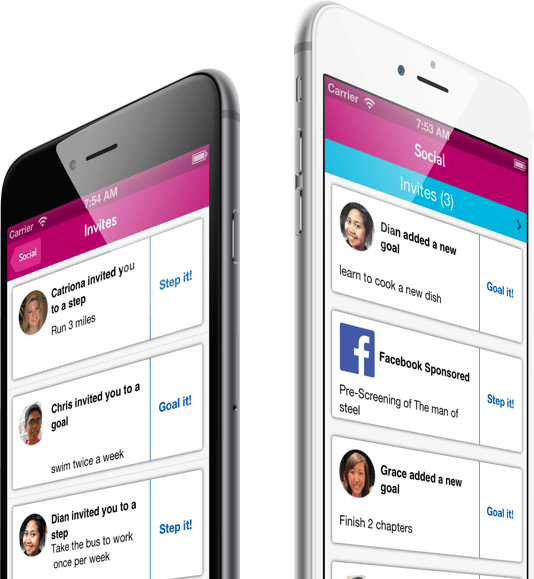
Many tech companies are known to encourage a culture of intense work and as a result these demanding environments have left many employees stressed and burned out. To tackle this problem, we came up with Balancer, an IOS application that helps busy employees maintain a good work-life balance through the completion of activities and goals.
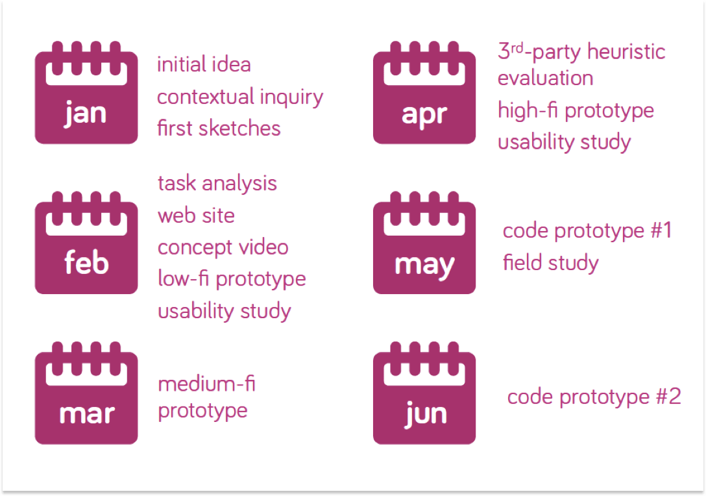
As a group, we brainstormed problems that we encountered and came up with possible ways to tackle them. After several rounds of discussion, we decided to solve the work-life balance problem that many of us feel strongly about.
We started with the problem statement, "How do we improve people's work-life balance?" In the ideation phase, we sketched out a few possible solutions.
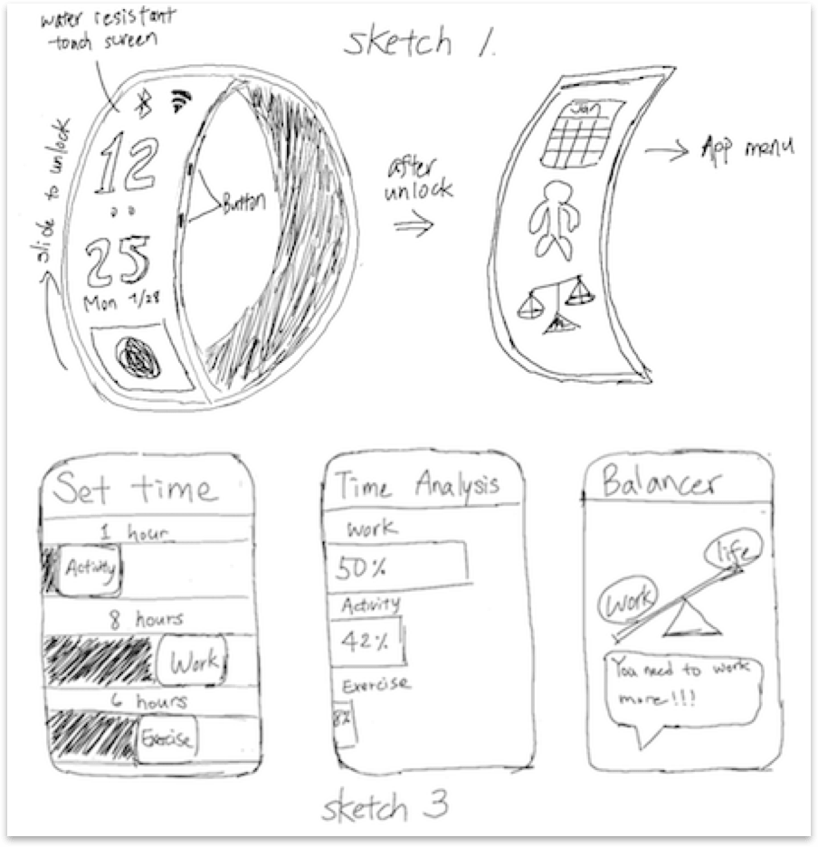
To further understand our target users, we conducted two rounds of contextual inquiry, one at Facebook and one at Microsoft. We found out that the majority of the employees at high tech companies relies heavily on their smart phone for daily tasks and we needed something that is easily accessible to promote behavioral change.
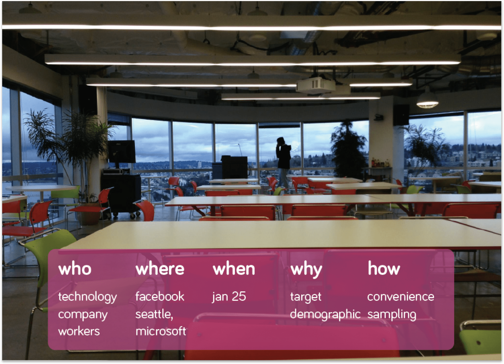
Based on our user research, we found two main problems that we want to tackle with Balancer, so we designed our features around them.
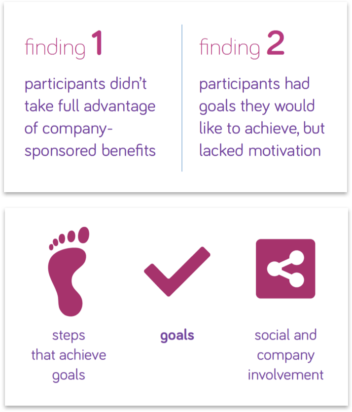
Using the information we gathered from our user research, we sketched out the initial UI flow on a white board and constructed our first prototype with paper.
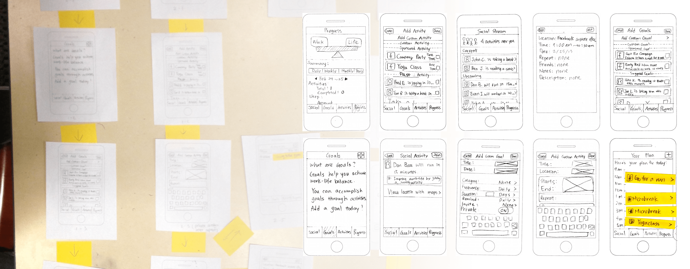
We created our first prototype with paper and conducted multiple usability tests to validate our model. This low fidelity prototype allowed users to focus on the work-flow and conceptual model. Fortunately, we were able to identify key usability and conceptual problems at an early stage.
The results of the usability tests helped us built a foundation for future prototypes.
Based on the feedback we received from our paper prototype, we further refined our UI and created an interactive Axure prototype, but we continued to find problems on our Axure prototype after several rounds of usability tests and Heuristic Evaluations.
We created an Axure prototype and conducted Heuristic Evaluations on them.
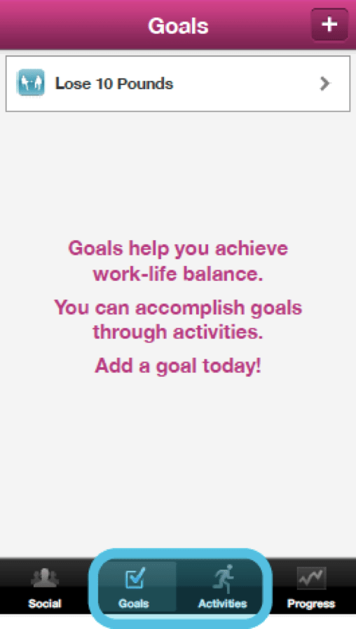
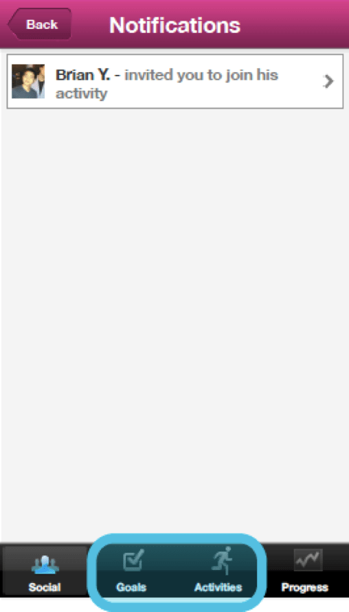
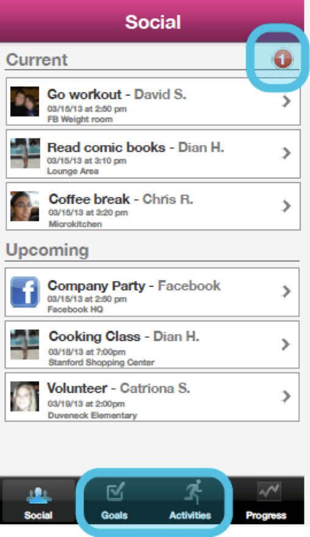
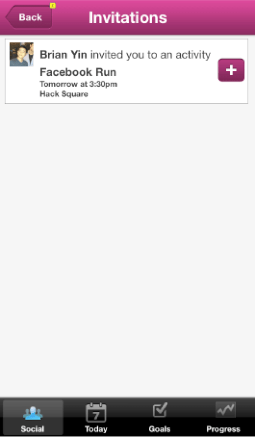
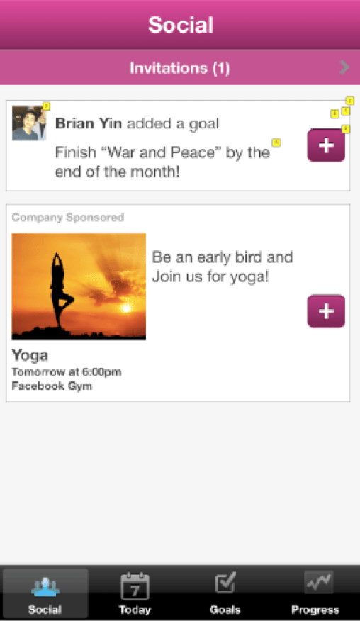
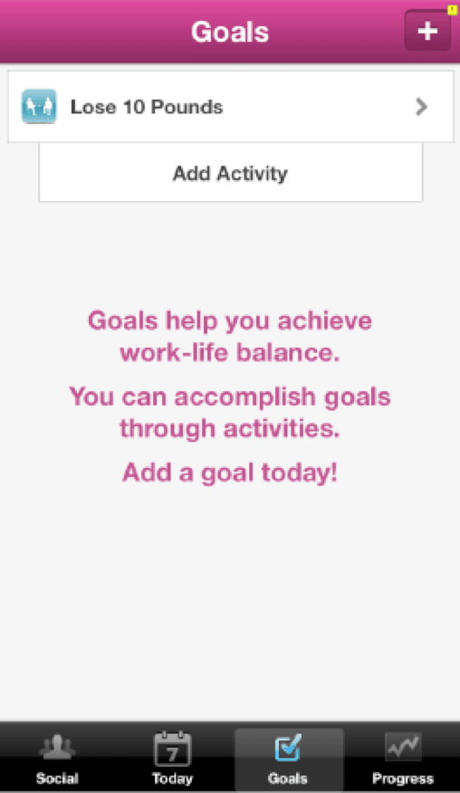
We updated the Axure prototype based on the results of the Heuristic Evaluation.
Our final deliverable was a functioning objective-C prototype with static data, and we conducted our final round of usability tests on it. Although we still found several issues after our final round of usability test, most people were able to grasp the concept.
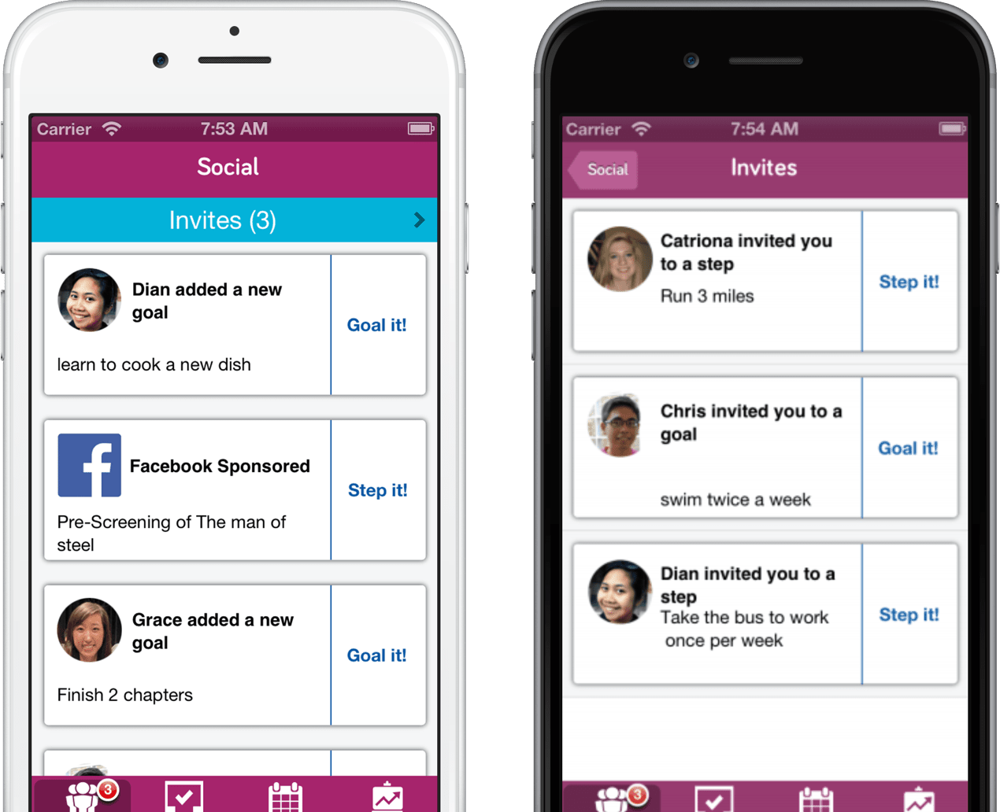
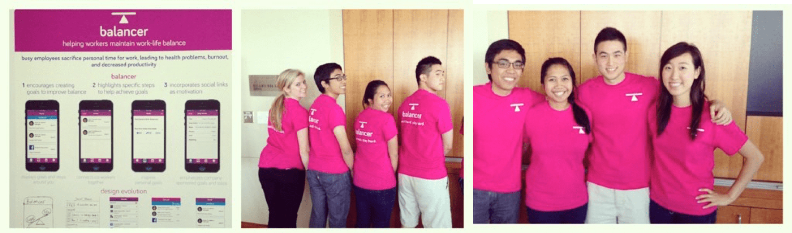